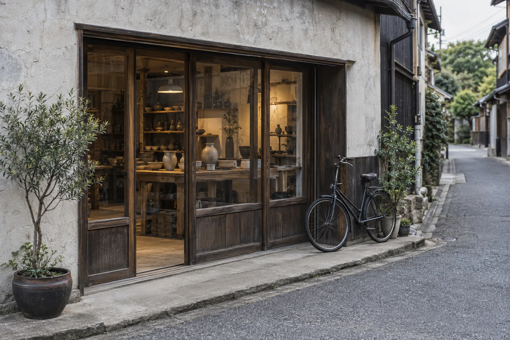

事業を始める方へ
お店や事業の
手続きの整理
やりたい事業の内容や場所を伺い、手続きに向けて確認することや、準備する書類を整理します。
- たとえば
- 許認可に関する書類の準備相談
開業までの確認事項の整理
まちの事業と、暮らしの書類に。
何から手をつければいいのか。
その「まだ、よくわからない」から、
一緒に整理していく事務所です。
PAPERWORK, WITH A WAY FORWARD.

お店を始めたい。事業の書類を見直したい。
けれど、何が必要なのかはまだ曖昧。
うまく説明できなくても、大丈夫です。
いまの状況と、これからしたいことを伺い、
必要な確認を一つずつ整理します。
内容を確認し、対応できる範囲をご案内。
専門用語も、そのままにはしません。

事業を始める方へ
やりたい事業の内容や場所を伺い、手続きに向けて確認することや、準備する書類を整理します。
事業を続ける方へ
手元にある書類と、ご相談の目的を確認。必要な情報や不足している資料を見えるようにします。
相談先に迷っている方へ
「これは相談してよいこと？」という段階から。内容を伺い、当事務所で対応できる範囲をお伝えします。
掲載内容は、架空の事務所を想定したサービスの例です。個別の内容を確認したうえで対応範囲をご案内する構成としており、手続きの可否や結果を保証するものではありません。

相談したいこと、目指していること、気になる時期。わかる範囲でお話しいただくところから始めます。
確認できた内容をもとに、お手伝いできること、必要な資料、費用と進め方をご案内します。
業務の範囲と費用に納得いただいてから着手。次に何をするかを確かめながら進めます。
次の3つがあると、お話が整理しやすくなります。
未定の項目は、未定のままでお聞かせください。
ご依頼前に、業務範囲と費用をご案内します。
金額だけでなく、その内訳も
確認できることを大切にしています。
お見積りでお伝えすること
途中で業務の追加や変更が必要になった場合も、
内容と費用を確認してから進める方針です。
「こんなことをしたい」「この書類が気になっている」など、わかる範囲の言葉から伺う想定です。内容を一緒に整理し、対応できる範囲をご案内します。
このサイトでは、事業などに関わる行政の許可や認可をまとめて「許認可」と表現しています。相談時には用語を言い換えながら、ご相談内容とどう関わるかを説明する想定です。
業務範囲と費用を確認してから、ご依頼を検討いただく流れを想定しています。相談の条件についても、受付時に明示する設計です。
「紙と道 行政書士事務所」はウェブサイトの制作例として設定した架空の事業者です。実際の業務相談は受け付けていません。同様のウェブサイトの制作は、國分Web製作所へご相談ください。

相談しやすさは、伝わりやすさから。
業務の範囲、費用の考え方、相談までの流れ。
言葉とデザインを整えて、
はじめての方が一歩を踏み出せるサイトに。